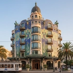

Los imprescindibles
Lugares únicos que no te puedes perder
-
La Casa Navàs
Edificio modernista único, obra de Domènech i Montaner.
-
General Prim
Militar y político reusense que llegó a ser presidente del Gobierno.
-
El Gaudí Centre
Espacio interactivo que explica la vida y obra del genial arquitecto.
-
La Casa Serra
Palacete modernista con detalles de piedra y hierro forjado.
-
El Institut Pere Mata
Complejo psiquiátrico modernista diseñado por Lluís Domènech i Montaner.
-
La prioral Sant Pere
Iglesia gótica que domina el centro histórico del Baix Camp.
Productos tradicionales
Los sabores de la capital del Baix Camp
-

El menjablanc
Postre tradicional, sencillez y refinamiento en una receta que ha sobrevivido siglos.
-

Las avellanas
Fruto emblemático del Camp, las avellanas son el orgullo agrícola de la comarca
-

El refresco Plim
De color rojo brillante, sin azúcar y sabor a grosella, se embotellaba artesanalmente.
Dónde dormir
Descubre alojamientos con encanto
-

El Hotel Caselles
Hotel modernista de Domènech i Montaner en Reus.
-
El Hotel Gaudí
Hotel céntrico inspirado en el genio reusense Gaudí.
-

El Hotel Sugranyes
Hotel interactivo dedicado a la obra de Gaudí.